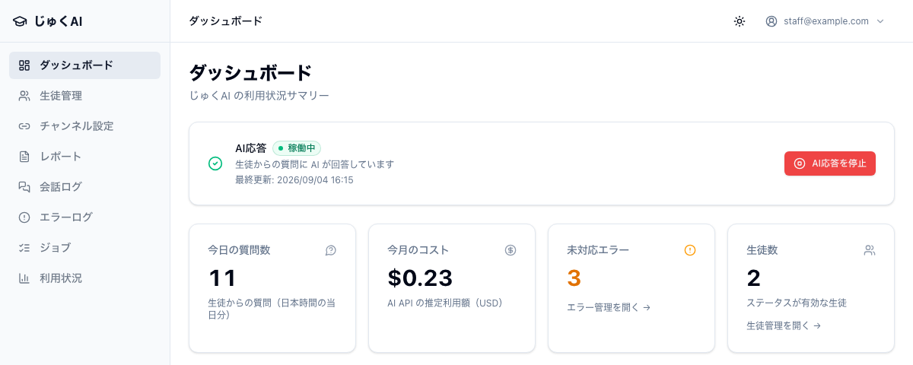
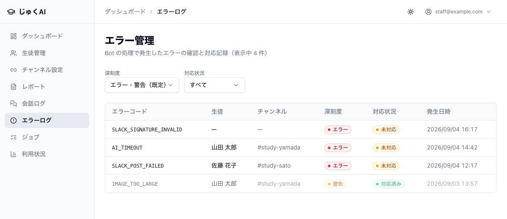
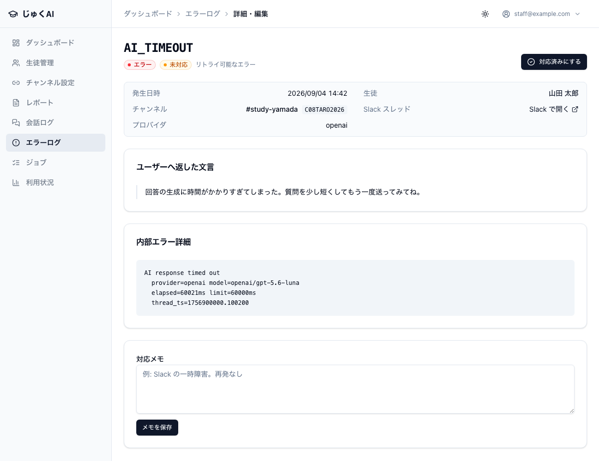
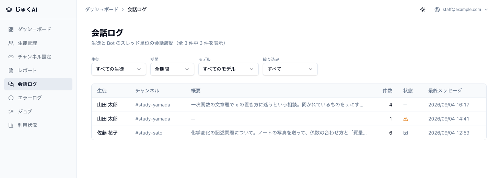
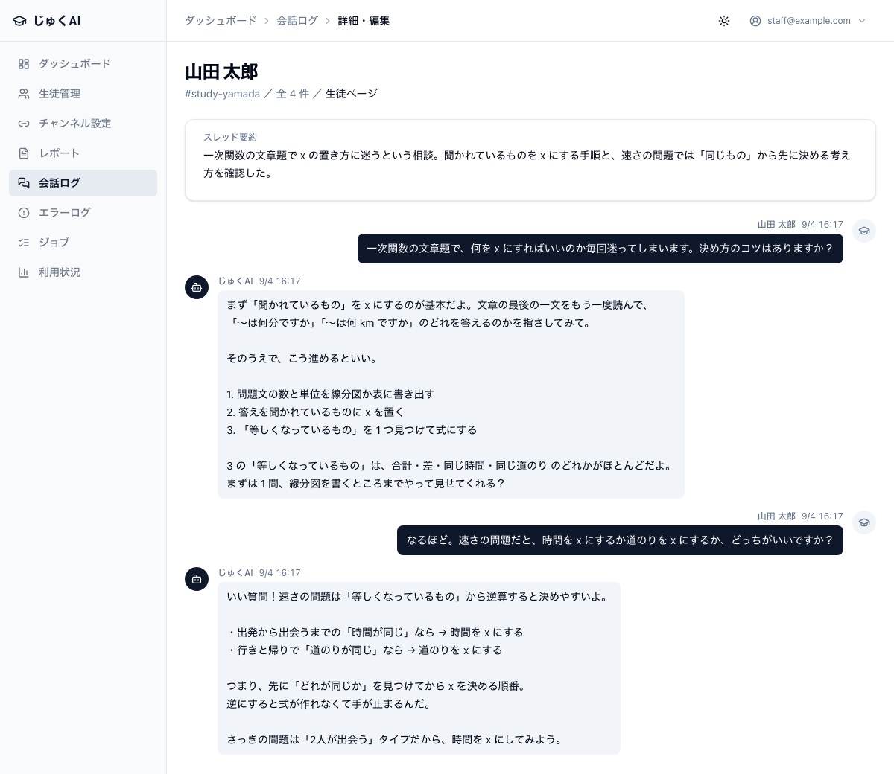
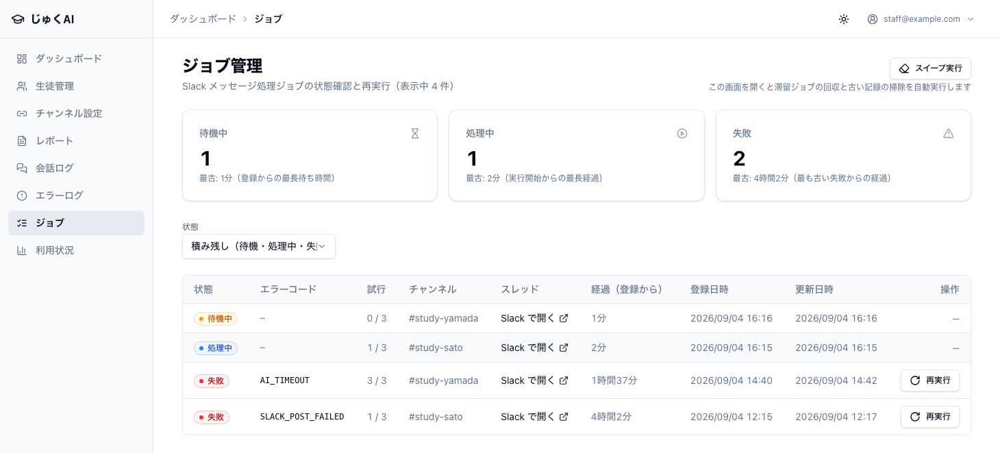

この章で分かること
なぜ毎日見る必要があるのか。 このアプリは、エラーが起きても Slack に自動で通知を飛ばしません （自動通知があるのは緊急停止の操作だけです）。 つまり人が画面を見に行かないと、失敗に気づけません。朝いちばんの習慣にしてください。
管理画面の ダッシュボード を開きます。上から順に見るだけです。

| 見るところ | 正常 | 正常でないときは |
|---|---|---|
| AI応答（一番上のカード） | 緑色で 稼働中 「生徒からの質問に AI が回答しています」と書かれています |
赤色で 停止中 → 誰かが緊急停止したままです。カードに理由と操作者が書かれています。 再開してよいか管理者に確認してください（第 7 章 7-1） |
| 未対応エラー | 0 | 1 以上 → 下の 2-2 へ。数字の下の「エラー管理を開く →」を押します |
| 今日の質問数 | いつもと同じくらい | ずっと 0 のまま → 誰も使えていない可能性。2-4 へ |
| 今月のコスト | いつもの伸び方 | 急に増えた（普段の 3 倍以上）→ 第 5 章の連絡基準へ。$0.00 のまま増えない場合も開発者へ |
| 最近のエラー（一番下） | 「エラーはありません」 | 並んでいる行をクリックすると詳細が開きます |
エラーログ（開くと「エラー管理」）の一覧には、次の列が並びます。
| 列 | 意味 |
|---|---|
| エラーコード | AI_TIMEOUT のような英字の記号。クリックすると詳細が開きます |
| 生徒 | 誰の質問で起きたか（生徒に関係のないエラーは —） |
| チャンネル | どのチャンネルで起きたか |
| 深刻度 | エラー（赤）／警告（黄）／情報（灰） |
| 対応状況 | 未対応／対応済み |
| 発生日時 | いつ起きたか |

「情報」レベルは、ふだんは表示されません。 一覧は初期状態で エラー・警告（既定） に絞られています。 「情報」は正常な動作の記録（質問回数の上限に達した・退塾生のチャンネルで質問された・紐付けを作成した など）なので、隠されています。 探したいときは 深刻度 のフィルタを すべて に変えてください。
エラーコードをクリックすると、次のことが分かります。

| コード | 何が起きたか（平たく言うと） | やること | 急ぎ度 |
|---|---|---|---|
AI_RESPONSE_FAILED | AI が回答を作れなかった | 1 件なら様子見。連続して出るなら開発者へ連絡（第 5 章） | 高 |
AI_RATE_LIMITED | AI のサービス側が混み合っていた | 自動でやり直します（5 秒 → 15 秒 → 45 秒待って再挑戦）。頻発するなら開発者へ | 中 |
AI_TIMEOUTJOB_TIMEOUT | 回答づくりに時間がかかりすぎた | 生徒には「もう一度送ってみてね」と返っています。頻発するなら開発者へ | 中 |
SLACK_POST_FAILED | Slack に書き込めなかった | Bot がチャンネルから外れていないか確認。外れていたら /invite @じゅくAI をやり直す | 高 |
CHANNEL_NOT_BOUND | 紐付けのないチャンネルで呼ばれた | 正しいチャンネルなら紐付けを登録（第 3 章 3-7）。関係ないチャンネルなら Bot を退出させる | 低 |
UNSUPPORTED_FILE_TYPEIMAGE_TOO_LARGE | 生徒が送ったファイルの形式・サイズが対象外 | 生徒に伝える：画像は jpg / png、20MB 以下。PDF や Word は読めません | 低 |
SLACK_FILE_DOWNLOAD_FAILED | 画像を取り込めなかった | 1 件なら Slack 側の一時的な不調。頻発するなら開発者へ | 低 |
IMAGE_MODEL_NOT_CONFIGURED | 画像を読むための設定が入っていない | 開発者へ連絡（スタッフ側では直せません） | 中 |
PERSON_INACTIVE（情報） | 「無効」にした生徒のチャンネルで質問された | 正常な動作。復塾したなら生徒のステータスを 有効 に戻す | — |
RATE_LIMITED（情報） | その生徒が 1 時間に 10 回の上限に達した | 正常な動作（第 7 章 7-2） | — |
CHANNEL_BINDING_CREATEDCHANNEL_BINDING_UPDATED（情報） | 誰かが紐付けを作成・変更した記録 | 正常な動作。「いつ誰が紐付けを変えたか」を後から追うために残しています | — |
THREAD_SUMMARY_FAILEDEVALUATOR_FAILED | 回答を送ったあとの内部処理が失敗した | 回答自体は生徒に届いています。ときどきなら気にしなくてよい | 低 |
Bot が退出していたので再招待した）未対応のままにしておくと、翌朝のダッシュボードにも数字が残ります。 「見たけれど対応不要と判断した」ものも、その旨をメモして対応済みにしておくと、翌日の自分が迷いません。
会話ログは、生徒とじゅくAI のやり取りがスレッド 1 本 = 1 行で並ぶ画面です。 「AI がちゃんと答えられているか」を確かめる場所です。
| 列 | 意味 |
|---|---|
| 生徒 | 誰の会話か。クリックすると中身が開きます |
| チャンネル | どのチャンネルか |
| 概要 | 長いスレッドを AI が短くまとめたもの（短いスレッドでは —） |
| 件数 | そのスレッドのメッセージ数 |
| 状態 | 画像が使われたか／エラーが起きたか（アイコン） |
| 最終メッセージ | 最後のやり取りの日時 |
上のフィルタで 生徒・期間・モデル・画像ありのみ・エラーありのみ に絞り込めます。

行をクリックすると、生徒とじゅくAI の吹き出しが時系列で並びます（右が生徒、左が じゅくAI）。 画像を送った発言には「画像添付あり」と表示されます。

ここが AI 用プロフィールを直す材料になります。 たとえば「説明が長すぎて生徒が読み飛ばしている」「学年に合わない難しい説明をしている」と気づいたら、 AI 用プロフィールの「学習スタイル・説明トーン」に書き足してください。次の質問からすぐ反映されます。
まず生徒にこう聞いてください：「どんな返事が返ってきた？」 返ってきた文面で原因がほぼ決まります。何も返ってこなかったのか、何か文章が返ってきたのかが分かれ目です。
頻度の高い順です。上から潰してください。
| # | 原因 | 見分け方 | 対処 |
|---|---|---|---|
| 1 | Bot がチャンネルに招待されていない いちばん多い |
チャンネル名をクリック → インテグレーション タブに「じゅくAI」が無い。エラーログにも何も残らない | そのチャンネルで /invite @じゅくAI と打つ（第 3 章 3-5） |
| 2 | 生徒が @じゅくAI を付けていない |
チャンネルの一番下（スレッドの外）に、メンションなしの発言が並んでいる | 生徒に伝える：新しい質問は @じゅくAI から始める。返信を続けるときはスレッドの中でメンション不要 |
| 3 | 生徒のステータスが 無効 になっている | 生徒管理でその生徒のステータスが「無効」。エラーログを深刻度「すべて」にすると PERSON_INACTIVE（情報）がある |
在籍しているなら 有効 に戻す（第 3 章 3-8） |
| 4 | Bot がスタッフの発言に反応しようとしている | 参加通知・ピン留めなどのシステムメッセージに反応していない | 仕様です。Bot 自身の発言や、Slack のシステムメッセージには反応しません |
| 5 | 上のどれでもない | — | 開発者へ連絡（Slack 側の設定の可能性。第 5 章） |
返ってきた文面ごとの原因です。生徒に文面をそのまま読んでもらうか、 会話ログで確認してください。
| 返ってきた文面 | 原因 | 対処 |
|---|---|---|
| このチャンネルにはまだBotの設定が完了していないみたい。 |
紐付けが無い、または「無効」 | チャンネル設定でこのチャンネルを紐付ける／ステータスを 有効 にする（第 3 章 3-7） |
| いまメンテナンス中でお返事ができないんだ | 緊急停止中 | ダッシュボードの AI応答カードが赤。管理者に再開を依頼（第 7 章 7-1） |
| 今日はたくさん質問してくれてありがとう！ |
1 時間に 10 回の上限 | 仕様です。1 時間待てば再び使えます（第 7 章 7-2） |
| いま少し混み合ってるみたいで、すぐ答えられないや | AI のサービス側が混雑 | 1〜2 分待って送り直してもらう |
| 回答の生成に時間がかかりすぎてしまった | 質問が重すぎた | 質問を短く分けて送ってもらう |
| 質問が少し長すぎて処理できなかったよ | 文章が長すぎる（目安 6000 文字） | 短く分けて送ってもらう |
| ごめん、そのファイル形式にはまだ対応してないんだ | PDF・Word などを送った | 画像（jpg / png）で送ってもらう。撮り直しでも可 |
| 画像が少し大きすぎたみたい | 1 枚 20MB 超 | 小さめに撮り直してもらう |
| ごめん、いまは画像を読み取れないみたい | 画像を読む設定が入っていない | 開発者へ連絡 |
| うまく処理できなかったみたい | 内部エラー | エラーログを見る（2-2）。続くなら開発者へ |
| 対応する生徒情報が見つからなかったよ | 紐付け先の生徒情報がおかしい | 開発者へ連絡 |
まれに、処理が途中で止まって 🤔 が付いたまま残ることがあります。 生徒には「まだ考え中」に見えてしまうので、ジョブ画面から再実行して回答を届けてください。
生徒の質問は 1 件ずつ順番に処理されます。ジョブはその進行状況を見る画面です。 ふだんは見なくてよく、「回答が来ない」と言われたときに開きます。
| カード | 正常 | たまっているときの意味 |
|---|---|---|
| 待機中 | 滞留なし | 受け付けたが処理が始まっていない。数分で消えるなら正常。15 分以上残るなら開発者へ |
| 処理中 | 滞留なし | 始まったまま終わっていない。10 分以上は異常 → 開発者へ |
| 失敗 | 滞留なし | 回答できなかった質問があります。生徒は待ちぼうけです。最優先で対応 |

失敗 の行にだけ 再実行 ボタンが出ます。押すと確認のダイアログが表示されます。
| ダイアログの文言 | 意味 | AI の費用 |
|---|---|---|
| 生成済みの回答が残っているため、AI を呼び直さず Slack への投稿だけをやり直します。 | 回答は作れていたが、Slack への書き込みで失敗した | かからない |
| AI 回答を生成し直して Slack に投稿します（API 利用コストが発生します）。 | 回答づくり自体が失敗した | かかる |
安心して押して構いません。
再実行する直前に「同じスレッドにじゅくAI の返信がもう入っていないか」を必ず確認する仕組みが入っています。
すでに届いていれば実行されず、
既に回答が配信済みのため再実行せず、完了として記録しました（二重返信の防止）
と表示されます。同じ回答が 2 回投稿されることはありません。
この画面を開くと、止まってしまった処理の後片付けが自動で走ります（1 分に 1 回まで）。 スイープ実行 ボタンで手動でも走らせられます。後片付けで「失敗」に変わっても生徒には何も通知されません （すでに回答が届いている可能性があり、二重に案内すると混乱するためです）。人が判断して再実行してください。